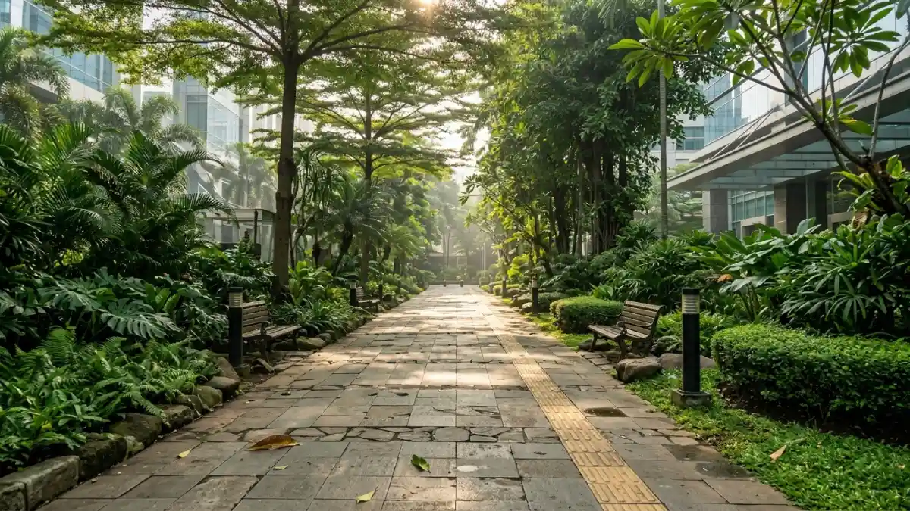

Walking meeting di sekitar area kantor membantu karyawan mengurangi
duduk berkepanjangan dan menambah gerak fisik ringan. (Ilustrasi)
Walking meeting di sekitar area kantor membantu karyawan mengurangi
duduk berkepanjangan dan menambah gerak fisik ringan. (Ilustrasi)
Walking meeting untuk kesehatan karyawan membantu mengurangi duduk berkepanjangan dan menambah aktivitas fisik ringan di tengah jam kerja, meski dampaknya kecil dan tidak menggantikan olahraga rutin.
- Studi percontohan Universitas Miami menemukan 88 persen peserta menyelesaikan walking meeting mereka, sehingga format ini layak dijalankan.
- Mengubah satu rapat mingguan menjadi walking meeting menambah sekitar 10 menit aktivitas fisik kerja pada pekerja kantoran dalam studi tersebut.
- WHO menyatakan bahwa mengganti waktu duduk dengan aktivitas apa pun, termasuk yang ringan, memberi manfaat kesehatan.
- Artikel ini berisi informasi umum, bukan saran medis, dan karyawan dengan kondisi kesehatan tertentu perlu berkonsultasi dengan tenaga kesehatan.
DAFTAR ISI
- 1. Apa itu walking meeting dan mengapa dikaitkan dengan kesehatan?
- 2. Seberapa besar aktivitas fisik yang bertambah dari walking meeting?
- 3. Apa kata pedoman WHO tentang waktu duduk dan aktivitas ringan?
- 4. Bagaimana dampak walking meeting terhadap kondisi mental dan stres kerja?
- 5. Siapa yang perlu berhati-hati dengan walking meeting?
- 6. Bagaimana HR dapat memasukkan walking meeting ke program wellness?
- 7. Apa saja keterbatasan bukti tentang walking meeting?
- 8. Kesimpulan
- 9. FAQ
1. Apa itu walking meeting dan mengapa dikaitkan dengan kesehatan?
Walking meeting adalah rapat kecil yang dilakukan sambil berjalan, dan dikaitkan dengan kesehatan karena dapat menggantikan sebagian waktu duduk yang panjang dengan gerak ringan.
Dalam praktiknya, walking meeting biasanya diikuti dua sampai empat orang. Mereka berjalan bersama di sekitar kantor, taman, atau jalur khusus sambil membahas agenda singkat, misalnya evaluasi pekerjaan atau diskusi ide.
Format ini menarik bagi tim HR dan pengelola program wellness karena tidak membutuhkan peralatan, biaya besar, atau jadwal olahraga tambahan. Rapat yang sudah ada tinggal diubah bentuknya.
Walking meeting merupakan salah satu bentuk meeting outdoor. Pembahasan kelebihan format luar ruangan secara umum tersedia di artikel pilar kelebihan meeting outdoor.
2. Seberapa besar aktivitas fisik yang bertambah dari walking meeting?
Dalam studi percontohan Universitas Miami selama tiga minggu, mengubah satu rapat mingguan menjadi walking meeting menambah sekitar 10 menit aktivitas fisik kerja pada pekerja kantoran, dan 88 persen peserta menyelesaikan sesinya.
Penelitian tersebut melibatkan pekerja kantoran universitas yang mengikuti rapat mingguan dalam kelompok dua atau tiga orang.
Selama tiga minggu, peserta memakai akselerometer pada jam kerja untuk mengukur aktivitas mereka.
Para peneliti menyimpulkan bahwa walking meeting layak dan dapat diterima oleh pekerja kantoran. Mereka juga menyebut studi ini bersifat percontohan dan menyarankan penelitian lanjutan dengan kelompok lebih besar serta pengukuran yang lebih sering.
Artinya, tambahan 10 menit memang tidak besar. Namun bila dilakukan berulang setiap pekan, kontribusinya dapat menambah total aktivitas harian, terutama bagi karyawan yang sebagian besar waktunya dihabiskan di depan komputer.
3. Apa kata pedoman WHO tentang waktu duduk dan aktivitas ringan?
WHO dalam pedoman 2020 menyatakan orang dewasa sebaiknya membatasi waktu sedenter, dan mengganti waktu duduk dengan aktivitas fisik intensitas apa pun, termasuk ringan, memberi manfaat kesehatan.
Pedoman yang sama merekomendasikan orang dewasa melakukan 150 sampai 300 menit aktivitas aerobik intensitas sedang, atau 75 sampai 150 menit intensitas berat, per minggu, atau kombinasi yang setara.
WHO juga menegaskan bahwa aktivitas dalam jumlah berapa pun lebih baik daripada tidak sama sekali.
Karena itu, walking meeting dapat dipandang sebagai tambahan, bukan pengganti. Berjalan santai sambil berdiskusi umumnya berintensitas ringan, sehingga belum tentu memenuhi kategori intensitas sedang. Meski demikian, manfaatnya terletak pada berkurangnya waktu duduk terus-menerus.
Karyawan yang ingin memenuhi target mingguan WHO tetap perlu menambah aktivitas lain, seperti berjalan cepat, bersepeda, atau olahraga terjadwal. Acuan lengkapnya tersedia di lembar fakta aktivitas fisik WHO.
4. Bagaimana dampak walking meeting terhadap kondisi mental dan stres kerja?
Berjalan di ruang terbuka hijau berkaitan dengan kesejahteraan yang lebih baik, tetapi bukti spesifik walking meeting terhadap stres kerja masih terbatas dan sebagian besar berasal dari studi kecil.
Studi besar terhadap 19.806 orang dewasa di Inggris (data survei 2014/15 hingga 2015/16, terbit di Scientific Reports pada 2019) menemukan bahwa kontak dengan alam minimal 120 menit per minggu berkaitan dengan peluang lebih besar untuk melaporkan kesehatan baik dan kesejahteraan tinggi. Studi tersebut tidak meneliti walking meeting, dan datanya berupa laporan mandiri responden.
Beberapa ulasan di bidang kesejahteraan kerja juga menyebut jalan kaki singkat di luar ruangan dapat membantu mengurangi gejala stres. Namun efeknya cenderung kecil dan bervariasi antarindividu.
Praktik yang aman adalah memandang walking meeting sebagai salah satu pendukung kesejahteraan, bersama pengaturan beban kerja, waktu istirahat yang cukup, dan dukungan psikologis bila diperlukan.

Jalur jalan kaki yang rata dan teduh di sekitar kantor mendukung walking meeting yang nyaman dan aman bagi karyawan. (Ilustrasi)5. Siapa yang perlu berhati-hati dengan walking meeting?
Karyawan dengan keterbatasan mobilitas, cedera, penyakit jantung atau pernapasan, kehamilan berisiko, atau kondisi kesehatan lain perlu menyesuaikan format dan berkonsultasi dengan tenaga kesehatan bila ragu.
Walking meeting sebaiknya tidak bersifat wajib. Perusahaan perlu menyediakan alternatif yang setara, misalnya rapat sambil duduk di taman, rapat berdiri, atau rapat daring biasa.
Beberapa hal praktis untuk menjaga keselamatan:
- Pilih jalur rata, teduh, dan jauh dari lalu lintas kendaraan.
- Anjurkan alas kaki nyaman dan air minum.
- Hindari jam terik dan kondisi udara buruk.
- Sesuaikan kecepatan dengan peserta paling lambat.
- Hentikan sesi bila ada peserta merasa pusing, sesak, atau tidak nyaman.
Artikel ini merupakan informasi umum dan tidak menggantikan nasihat dokter atau ahli kesehatan kerja. Setiap perusahaan sebaiknya menyesuaikan kebijakan dengan kondisi karyawannya.
6. Bagaimana HR dapat memasukkan walking meeting ke program wellness?
HR dapat memulai dengan program percontohan kecil: pilih beberapa tim, ubah satu rapat mingguan menjadi walking meeting sukarela, sediakan jalur aman, lalu evaluasi partisipasi dan umpan balik.
Langkah awal yang realistis:
- Tentukan rapat yang cocok, yaitu pertemuan satu lawan satu atau diskusi tim kecil tanpa presentasi.
- Tandai jalur jalan kaki 10 sampai 20 menit di sekitar kantor yang aman dan teduh.
- Jelaskan bahwa partisipasi bersifat sukarela dan ada pilihan format lain.
- Sediakan panduan singkat untuk pencatatan hasil rapat.
- Kumpulkan umpan balik setelah empat sampai delapan pekan.
Beberapa ulasan HR menyarankan menyebut walking meeting sebagai cara menjalankan jenis rapat tertentu, bukan sebagai kewajiban wellness. Pendekatan ini mengurangi kesan paksaan dan membuat karyawan lebih terbuka mencobanya.
Panduan teknis pelaksanaan tersedia di cara mengadakan meeting outdoor yang efektif. Pengaruhnya terhadap ide tim dibahas di manfaat meeting outdoor untuk kreativitas tim.
7. Apa saja keterbatasan bukti tentang walking meeting?
Bukti walking meeting masih berkembang: sebagian besar studi berskala kecil, berdurasi singkat, atau berbasis laporan mandiri, sehingga hasilnya perlu dibaca sebagai indikasi, bukan kepastian.
Studi Universitas Miami adalah penelitian percontohan dengan sampel kecil dan durasi tiga minggu. Survei di Harvard Business Review melibatkan sekitar 150 responden dan mengandalkan laporan sendiri. Studi besar tentang nature exposure tidak secara langsung meneliti rapat sambil berjalan.
Karena itu, perusahaan sebaiknya tidak menjanjikan hasil kesehatan tertentu kepada karyawan. Pendekatan yang lebih jujur adalah menyebutnya sebagai cara sederhana untuk mengurangi duduk lama dan menambah gerak ringan, lalu mengukur dampaknya di organisasi sendiri.
8. Kesimpulan
Walking meeting adalah cara berbiaya rendah untuk menambah gerak ringan dan mengurangi duduk lama, selama dijalankan sukarela, aman, dan tidak diposisikan sebagai pengganti olahraga atau perawatan medis.
- Gunakan untuk rapat kecil tanpa presentasi.
- Siapkan jalur aman, teduh, dan alternatif bagi yang tidak dapat berjalan.
- Jangan menjanjikan hasil kesehatan spesifik.
- Dorong karyawan menambah aktivitas lain untuk mencapai target mingguan WHO.
- Konsultasikan kondisi kesehatan pribadi dengan tenaga kesehatan.